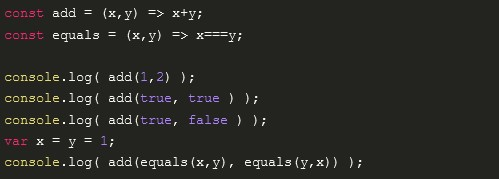

Gegeben sei folgendes fehlerbehaftete JavaScript-Programm. Ergänzen Sie dieses um möglichst viele Typisierungen und übersetzen Sie es in ein TypeScript-Programm.
Was ist der Fehler in dem gegebenen JavaScript-Code?
das Programm wird hier true mit 1 und false mit 0 ersetzen und beide werte addiert was im Prinzip add addiert nur integer Werte deswegen soll die Datentype von x und y deklariert werden.
Geben Sie hier Ihren TypeScript-Code ein:
const add = (x:number,y:number) => x+y; const equals = (x:boolean,y:boolean) => x===y; console.log( add(1,2) ); console.log( add(true, true ) ); console.log( add(true, false ) ); var x = y = 1; console.log( add(equals(x,y), equals(y,x)) );
Welche Fehler meldet TypeScript?
Fehler 1: console.log( add(true, true ) ); boolean type anstatt number abgegeben Fehler 2: var x = y = 1; y ist nicht Deklariert Fehler 3: console.log( add(equals(x,y), equals(y,x)) ); equals liefert Booleane werte zurück aber add soll number werte addieren.
Geben Sie weitere Beispiele an, wie TypeScript bei der Fehlersuche helfen kann:
let erste= () => ({ übung:10, aufgabe: 2});
let zweite = () => ({ übung:10 ,aufgabe: 2 , frage:"letzte_Frage"});
erste= zweite ; //works
zweite = erste; //Not working